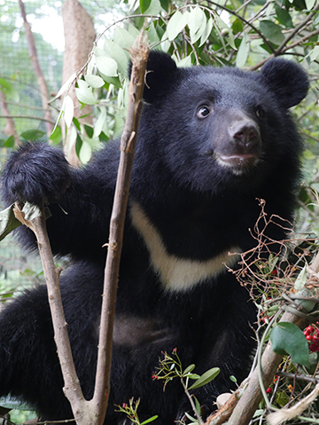

|  | 臺灣黑熊（學名：Ursus thibetanus formosanus，布農語：tumaz、賽夏語：somay、泰雅語：ngarox、德路固語：kumay、鄒語：cmoi、卡那卡那富語：cumai、排灣語：cumay），俗稱：狗熊、月熊。是臺灣特有的亞洲黑熊亞種（臺灣唯一性的原生熊類），胸前的V字型白色條紋（太魯閣語稱做
rabang）是亞洲黑熊共有的特徵。
身為台灣吉祥物的台灣黑熊，更是台灣陸域體型最大的食肉物動物，海拔1000至3000公尺的楠林帶與櫟林帶是黑熊經常活動的區域，以中海拔為主，儘管黑熊利用的森林環境類型多元，需要的棲地環境多樣性，活動範可達500平方公里。 |
台灣黑熊面臨的危機，包括非法狩獵、棲息地減少或破壞、道路開發、遊憩干擾以及黑熊保育宣導不足等問題，不僅如此，現今一頭熊依然可賣得新台幣10萬元以上，一公斤的熊肉更高達千元， 導致現在野外仍存在非法使用獸鋏或套索陷阱，企圖捕捉黑熊，在玉山國家公園歷時3年的捕捉繫放研究中，捕捉到的15隻黑熊中，便有8隻有斷掌或斷趾的情形。